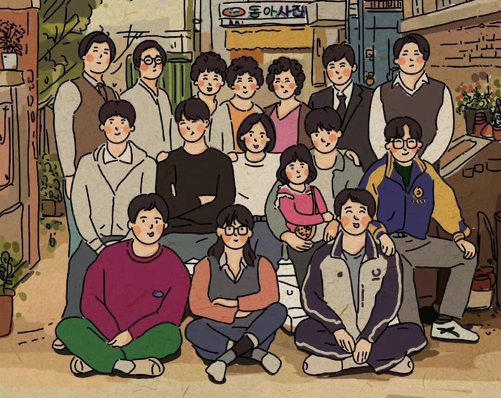
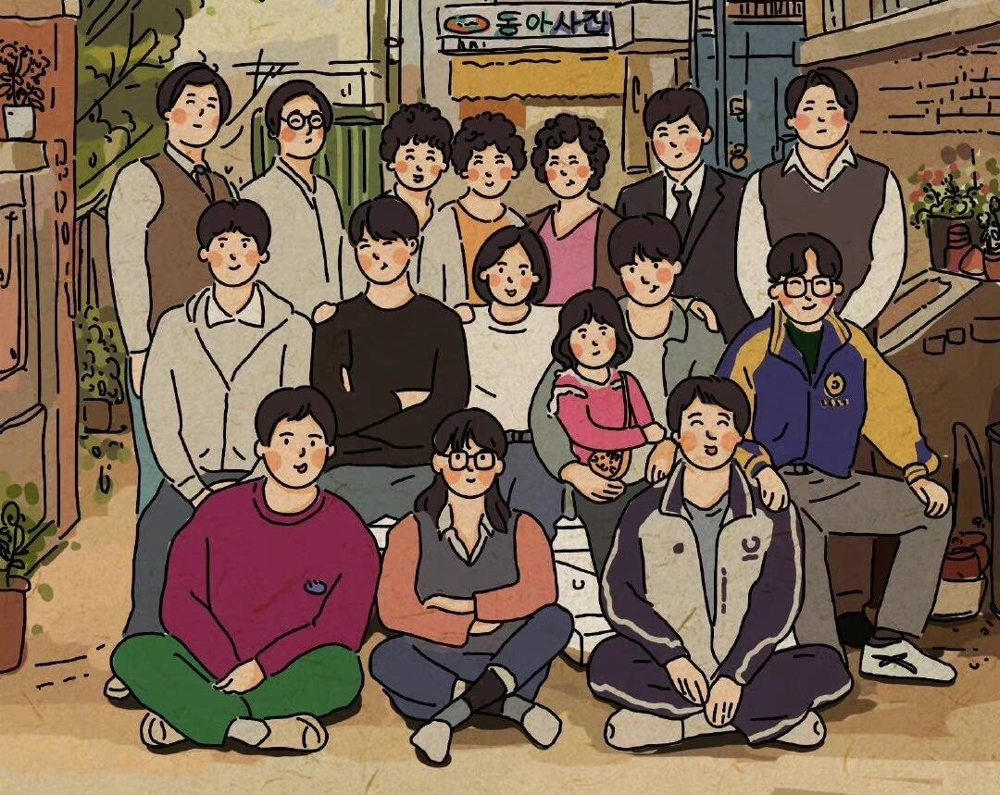

经典语录
《请回答1988》刻画了5个家庭和10余个主要人物，人物戏份平均，谁都不是绝对主角；情感浓度也很均匀，谁也不是人生输赢家。这部剧不依靠高颜值的演员，没有大喜大悲的人物情感，没有跌宕起伏的人物命运，甚至也没有强烈的情节和反转，但该剧征服了很多观众的心。剧中看似寻常的亲情故事和信手拈来、再平凡不过的小琐事，因为富含情感，所以能够让观众真切感受到亲人给予的温情与善意。该剧在触手可及的生活细节里融入韩国饮食、民俗、服饰、音乐、围棋等传统文化元素，为观众带来了文化厚重感和新鲜感。（人民网评）
该剧延续了“请回答”系列的传统，忠实呈现了故事发生年代的流行文化。剧中细致地重现了穿牛仔外套、NIKE球鞋，用火柴棍烫翘睫毛，听李文世的音乐广播节目，给电台写信等等那个年代的特有产物，也展新了那个时代刚刚流行起来的炸鸡、游戏卡带等事物，这唤起了经历过80年代的人们的青春回忆，也帮助人们为现在鼎盛的韩国流行文化追本溯源。（《新京报》评）
该剧是一部主打亲情和家庭的电视剧。温暖的剧情激发了人们对于亲情的共鸣，因此毫无障碍地获得了各年龄层观众们的喜爱，这其中甚至还包括很多在1988年时尚未出生的观众。（搜狐韩娱评）
该剧围绕亲情、友情和爱情题材，用平实、搞笑却充满温暖的故事打动了观众。铁打的成氏夫妻流水的儿女，老公人选猜猜猜，咩咩叫的山羊音，经典桥段“确认心意”的吻，以及每一集中都能单独挑出来的经典台词，在这些熟悉的固定剧情模式下，即使是对于1988年的历史不甚了解的80、90后，也能够毫无困难的接受编剧所传达的主题。该剧将故事重心放在了邻里相处和父母与子女之间的亲情上，给观众带来了深深的精彩和感动。（新浪娱乐评）